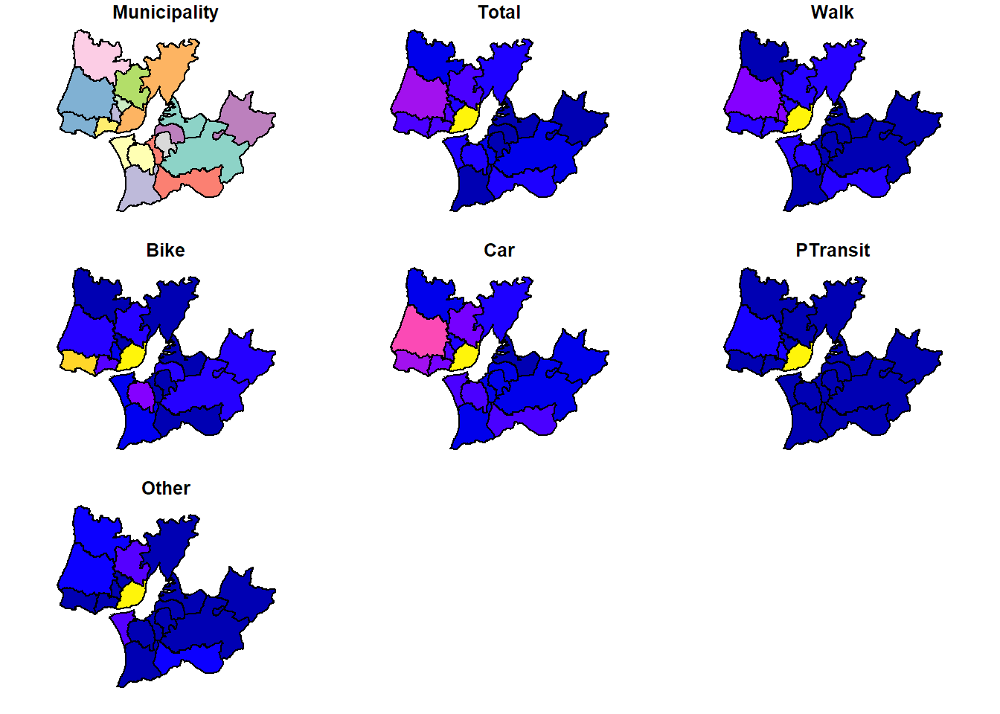
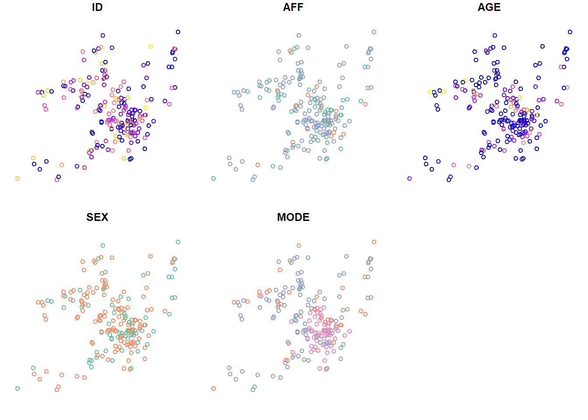

Code
library(sf)
library(dplyr)Spatial data is data that is associated with a geometry. This geometry can be a point, a line, a polygon, or a grid.
Spatial data can be represented in many ways, such as vector data and raster data. In this tutorial, we will learn how to work with spatial data in R.
We will use the sf package to work with vector data, and the dplyr package to manipulate data.
library(sf)
library(dplyr)The sf package is a powerful package for working with spatial data in R. It includes hundreds of functions to deal with spatial data (Pebesma and Bivand 2023).
Download and open Municipalities_geo.gpkg under EITcourse/data repository.
Within the sf package, we use the st_read() to read spatial features.
Municipalities_geo = st_read("data/Municipalities_geo.gpkg")Reading layer `Municipalities_geo' from data source
`D:\GIS\EITcourse\data\Municipalities_geo.gpkg' using driver `GPKG'
Simple feature collection with 18 features and 1 field
Geometry type: MULTIPOLYGON
Dimension: XY
Bounding box: xmin: -9.500527 ymin: 38.40907 xmax: -8.490972 ymax: 39.06472
Geodetic CRS: WGS 84You can also open directly from url from github. Example:
Municipalities_geo = st_read("https://github.com/U-Shift/EITcourse/raw/main/data/Municipalities_geo.gpkg")
A projected coordinate system is a flat representation of the Earth’s surface. A geographic coordinate system is a spherical representation of the Earth’s surface.
The st_crs() function can be used to check the coordinate reference system of a spatial object.
st_crs(Municipalities_geo)Coordinate Reference System:
User input: WGS 84
wkt:
GEOGCRS["WGS 84",
ENSEMBLE["World Geodetic System 1984 ensemble",
MEMBER["World Geodetic System 1984 (Transit)"],
MEMBER["World Geodetic System 1984 (G730)"],
MEMBER["World Geodetic System 1984 (G873)"],
MEMBER["World Geodetic System 1984 (G1150)"],
MEMBER["World Geodetic System 1984 (G1674)"],
MEMBER["World Geodetic System 1984 (G1762)"],
MEMBER["World Geodetic System 1984 (G2139)"],
ELLIPSOID["WGS 84",6378137,298.257223563,
LENGTHUNIT["metre",1]],
ENSEMBLEACCURACY[2.0]],
PRIMEM["Greenwich",0,
ANGLEUNIT["degree",0.0174532925199433]],
CS[ellipsoidal,2],
AXIS["geodetic latitude (Lat)",north,
ORDER[1],
ANGLEUNIT["degree",0.0174532925199433]],
AXIS["geodetic longitude (Lon)",east,
ORDER[2],
ANGLEUNIT["degree",0.0174532925199433]],
USAGE[
SCOPE["Horizontal component of 3D system."],
AREA["World."],
BBOX[-90,-180,90,180]],
ID["EPSG",4326]]WGS84 is the most common geographic coordinate system, used in GPS, and EPSG:4326 is code for it.
If we want to project the data to a projected coordinate system, to use metric units instead of degrees, we can use the st_transform() function.
In this case, the EPGS:3857 is the code for the Pseudo-Mercator coordinate system.
Municipalities_projected = st_transform(Municipalities_geo, crs = 3857)Now see the differences when calling Municipalities_geo and Municipalities_projected.
Import TRIPSmun.Rds file and check data class-
TRIPSmun = readRDS("data/TRIPSmun.Rds")
class(TRIPSmun)[1] "data.frame"class(Municipalities_geo)[1] "sf" "data.frame"To join the geometries from the Municipalities_geo to the data frame, we can use the left_join() function from the dplyr package.
TRIPSgeo =
TRIPSmun |>
left_join(Municipalities_geo)
class(TRIPSgeo)[1] "data.frame"As you can see, this does not make the object a spatial feature. To do this, we need to use the st_as_sf() function.
TRIPSgeo = TRIPSgeo |> st_as_sf()
class(TRIPSgeo)[1] "sf" "data.frame"Now we have a spatial feature with the data frame.
The st_as_sf() function can also be used to create a spatial feature from a data frame with coordinates. In that case, we need to specify the columns with the coordinates.
We will use survey data (in .txt) with the participants’ home latitude/longitude coordinates to create a spatial feature.
SURVEY = read.csv("data/SURVEY.txt", sep = "\t") # tab delimiter
class(SURVEY)[1] "data.frame"SURVEYgeo = st_as_sf(SURVEY, coords = c("lon", "lat"), crs = 4326) # create spatial feature
class(SURVEYgeo)[1] "sf" "data.frame"We can also set the crs of the spatial feature on the fly.
Check the differences between both data variables.
Represent Transport Zones with Total and Car, using plot().
plot(TRIPSgeo) # all variables
plot(TRIPSgeo["Municipality"])plot(TRIPSgeo["Total"])plot(TRIPSgeo["Car"])# plot pointy data
plot(SURVEYgeo)
In the next chapter we will learn how to create interactive maps.
You can save your spatial data in different formats using the function st_write(), such as shapefiles (ESRI), GeoJSON, and GeoPackage.
This is also useful to convert spatial data between formats.
st_write(TRIPSgeo, "data/TRIPSgeo.gpkg") # as geopackage
st_write(TRIPSgeo, "data/TRIPSgeo.shp") # as shapefile
st_write(TRIPSgeo, "data/TRIPSgeo.geojson") # as geojson
st_write(TRIPSgeo, "data/TRIPSgeo.csv", layer_options = "GEOMETRY=AS_WKT") # as csv, with WKT geometryIf you already have a file with the same name, you can use the delete_dns = TRUE argument to overwrite it.